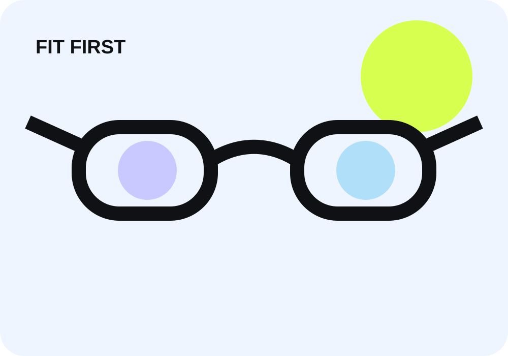

Premium γυαλιά ηλίου online: πώς μειώνεις το ρίσκο λάθος εφαρμογής
Affiliate disclosure: Οι σύνδεσμοι προς προϊόντα μπορεί να είναι affiliate. Η αισθητική πρόταση δεν αντικαθιστά οπτομετρική/ιατρική συμβουλή.

Το πρόσωπο δεν είναι μόνο “στρογγυλό” ή “τετράγωνο”
Σε ακριβό eyewear, το fit εξαρτάται από συνολικό frame width, bridge, lens width, temples και το πού κάθονται οι φακοί σε σχέση με τα χαρακτηριστικά σου. Το face-shape label είναι μόνο ένα μέρος της απόφασης.
Επιλογές με διαφορετικό fit logic
Tom Ford 1044/S
Για premium frame όπου η επιστροφή λόγω λάθος μεγέθους είναι ακριβό friction, δες τα Tom Ford 1044/S και σύγκρινε τις διαστάσεις με ένα frame που σου εφαρμόζει ήδη καλά.
Tom Ford 1150/D/S
Αν το bridge geometry είναι βασικό πρόβλημα, εξέτασε τα Tom Ford 1150/D/S.
Garrett Leight Lachman
Για acetate styling και medium/narrow fit intent, δες τα Garrett Leight Lachman.
Oliver Peoples 1351S
Για understated premium αισθητική, σύγκρινε τα Oliver Peoples 1351S.
Fit checklist
- Βρες τις διαστάσεις σε γυαλιά που ήδη σου κάθονται σωστά.
- Σύγκρινε συνολικό frame width, bridge και temple length.
- Σκέψου χρήση: οδήγηση, καθημερινότητα, sport, prescription.
- Έλεγξε πολιτική επιστροφών πριν την online αγορά.
- Μην συμπεραίνεις φύλο, ηλικία ή άλλα προσωπικά χαρακτηριστικά από φωτογραφία.